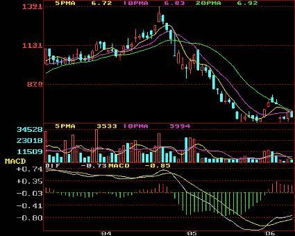
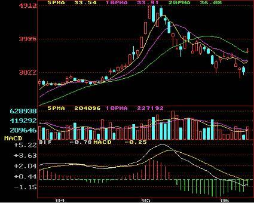

09:48

期貨K線
K線是什麼呢？對與炒股和外匯的人並不陌生，K線是指骨片在走勢中的K線圖，最早的時候由日本的一個米商用來記錄一天、一周或者一個月中米價漲跌的行情圖，後來被引入到了股市，因為K線圖的直觀、立體感、並且鞋帶信息量大的特點，所以富含了豐富的東方哲學思想，同時也出現了一些外匯k線圖經典圖解，很多股票學校和交流群裡都會給大家講解一些K線的經典圖解。
1、頂部三隻烏鴉:
在上升行情中，經過連續上漲之後，在高區接連出現三根高開低收的陰線，表明空方已經佔據主導地位，賣盤強勁，是股價暴跌的前兆。

2、高位下降覆蓋線:
股價連續上揚數天之後，突然高開低收，大陰線覆蓋前一日的陽線，表明多方氣數已盡，空方反撲開始，大量賣盤湧出，股價即將大跌。



写死，我会给内容